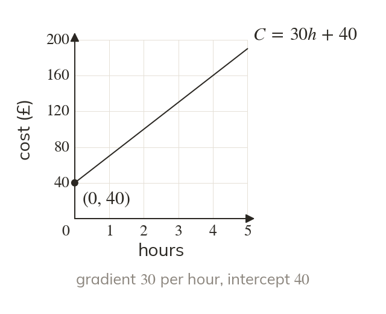
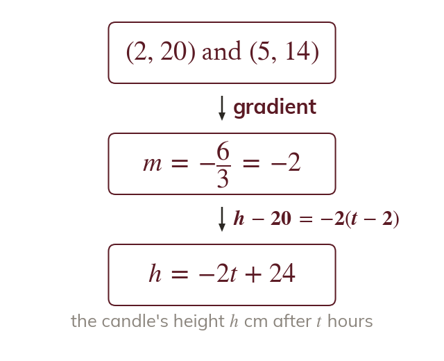
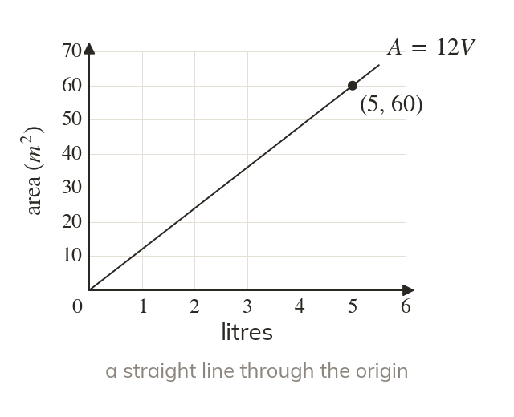
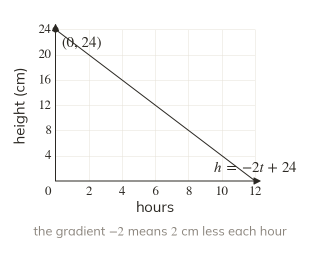
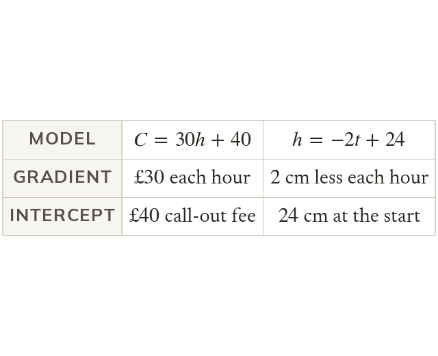
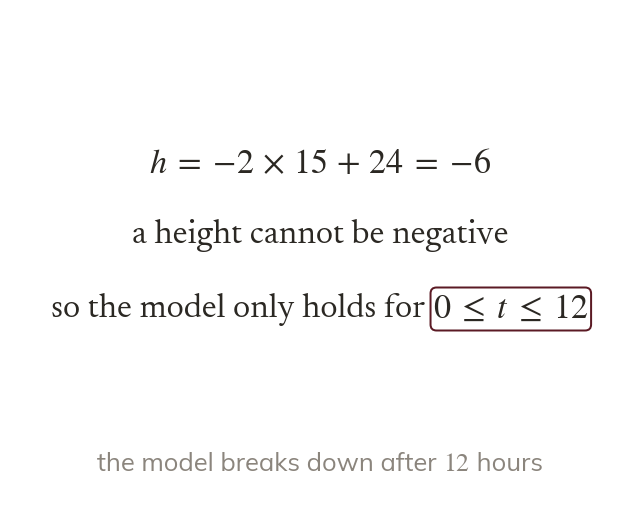

A rate is a gradient
A plumber charges a call-out fee and an hour. The cost after hours is where the gradient is the rate and the intercept is the cost at
Many real quantities change at a steady rate, and a straight line models them with a gradient that is a rate and an intercept that is a starting value. Deciding how far a linear model can be trusted ends most modelling questions, and the next chapter, circles, uses these line methods again.
Work down the page at your own pace. Write every answer in your book first, then click to check it.
Read each card, then follow the worked examples one step at a time.

A plumber charges a call-out fee and an hour. The cost after hours is where the gradient is the rate and the intercept is the cost at

A candle is cm tall after hours and cm tall after hours. Its height falls by cm in hours, so the gradient is and the model is

When is directly proportional to and the line goes through the origin. If litres of paint cover m², the area covered is
Pick an answer. If it's wrong, the feedback tells you which mistake it was.
Write the blanks in your book first, then tap each one to check.
Read each card, then follow the worked examples one step at a time.

In a model the gradient is the change in y for each unit of x, given with both units. In the candle loses cm of height every hour.

The intercept is the value of when often a starting value or a fixed charge. It only has a meaning if makes sense in the context.

A prediction inside the range of the data is interpolation; one far outside it is extrapolation, and may fail. The candle model gives a negative height after hours.
Pick an answer. If it's wrong, the feedback tells you which mistake it was.
Write the blanks in your book first, then tap each one to check.
Finished? Next lesson: 12.P6.1 Midpoints and Perpendicular Bisectors.
For each skill, tap the one that is true for you today. Your Revise pages start with anything you mark Not yet.
Your ratings are saved on this device only.
Log in, then search for a code to practise that skill.